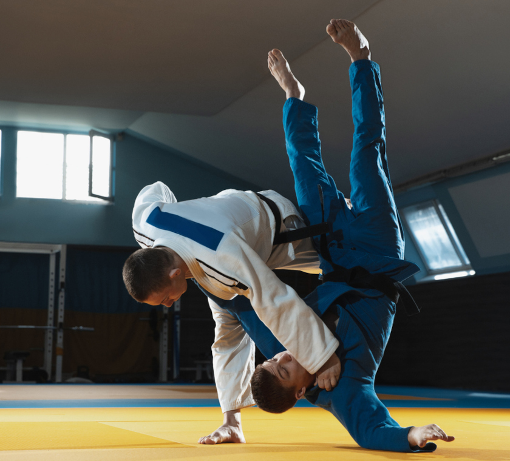
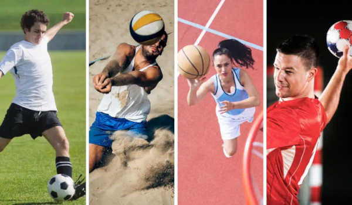
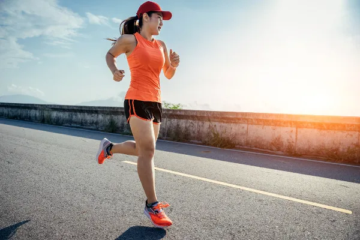

A avaliação física da IronLung é um processo essencial para o direcionamento individualizado do treinamento de atletas. Realizada de forma sistemática, ela tem como objetivo identificar o nível atual de desempenho físico, bem como possíveis desequilíbrios musculares, limitações funcionais e pontos de melhoria. O protocolo inclui análise de composição corporal, testes de força, resistência, mobilidade e capacidade cardiorrespiratória. Além disso, são aplicadas avaliações específicas de acordo com a modalidade do atleta, garantindo maior precisão na prescrição do treino.Os dados coletados são utilizados para a elaboração de programas personalizados, com foco na otimização do desempenho e na prevenção de lesões. A reavaliação periódica permite o acompanhamento da evolução do atleta e ajustes contínuos no planejamento. As séries e protocolos de avaliação estão organizados no espaço abaixo, separados por modalidade esportiva. Para acessar as diretrizes específicas, basta selecionar o esporte desejado. Todas as avaliações são destinadas a atletas de nível intermediário, avançado e profissional..

45/60 min
Alta
As artes marciais desenvolvem disciplina, respeito, foco e condicionamento físico. Em nossa academia, os treinos unem técnicas de luta e exercícios funcionais para melhorar desempenho e confiança.
Saiba Mais
30 min
Alta
Os esportes coletivos fortalecem o trabalho em equipe, a comunicação e a estratégia. Nossos treinos ajudam os atletas a evoluírem física e taticamente para melhor desempenho em jogo.
Saiba Mais
30/45 min
Alta
Os esportes individuais trabalham foco, disciplina e superação. Na academia, os treinos são personalizados para melhorar a performance e ajudar cada atleta a alcançar seus objetivos.
Saiba Mais